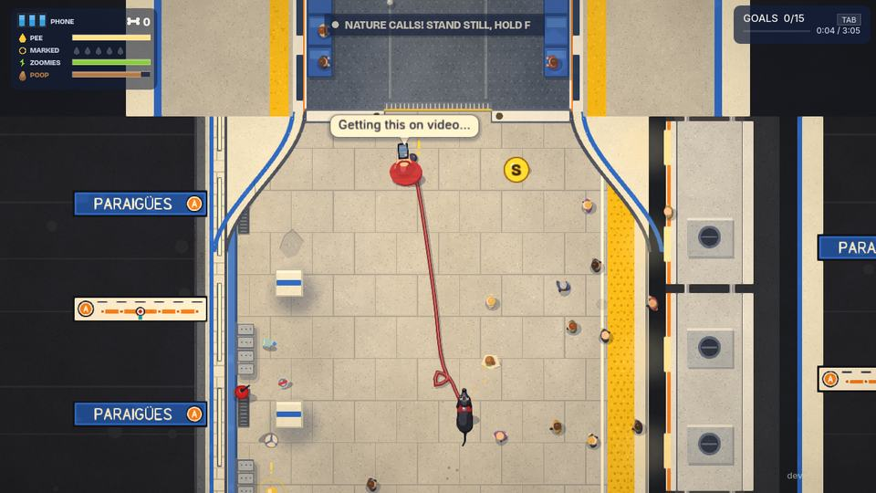
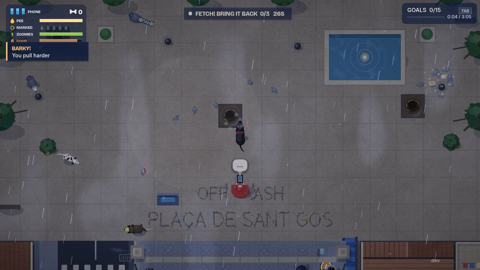

Rush hour, one stop on the metro
Ducking out of a rainstorm down into the metro for one quick rush-hour stop: ticket gates, bright platform tiles, folded umbrellas and packed train doors before surfacing back onto the wet street at Plaça de Sant Gos.

